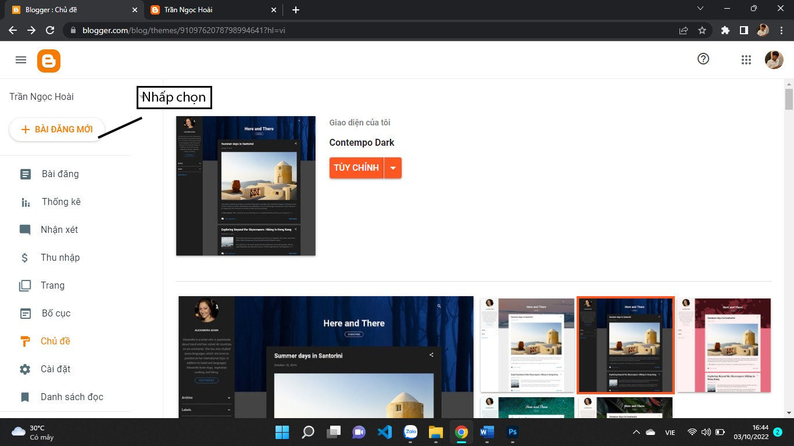

Bài 4: Thiết kế và quản trị website với công cụ
Nội dung bài học
1. Giới thiệu
Blogger là một platform có thể hỗ trợ bạn tự thiết kế một trang blog miễn phí với nhiều tính năng hấp dẫn, nó được phát triển và ra đời cách đây khá lâu kể từ cuối những năm thập niên 90. Vào thời điểm ấy, Blogger khá là đình đám và đóng vai trò quan trọng trong việc phát triển các trang blog. Tuy nhiên, theo thời gian, Blogger rơi vào giai đoạn thoái trào nên cuối cùng Blogger đã bị Google mua lại vào năm 2003. Nhưng cũng nhờ Google, kể từ thời điểm đó, Blogger đã quay trở lại và phát triển nhanh chóng với nhiều tính năng nổi bật, hấp dẫn hơn.
2. Các bước tạo website với Blogger
Truy cập vào website chính thức của Blogger: https://www.blogger.com.
Nhấp chọn "Tạo Blogger" của bạn
Tạo tài khoản đăng nhập, để tiện việc sử dụng sau này hơn khuyến khích chúng ta nên sử dụng tài khoản gmail ( Google) để đăng nhập. Sau khi hoàn tất việc tạo tài khoản và đăng nhập đây là giao diện chính của Blogger
Tiếp tục chọn vào các Chủ đề có sẵn để tạo 1 trang web nhanh chóng nhất, ấn chọn chủ đề bến phía tay trái màn hình

Có rất nhiều chủ đề để chúng ta chọn... Nhấp vào chủ đề muốn chọn:
Nhấp chọn Áp Dụng
Sau khi áp dụng thành công. Nhấp chọn "BÀI ĐĂNG MỚI" bên trên góc tay trái màn hình
Nhấp chọn bài đăng mới để chúng ta có thể viết 1 nội dung gì đó tùy chúng ta để hiện thị lên cho mọi người thấy

Để có thể hoàn hảo nhất sau khi hoàn thành blog, khuyến khích nên chọn "Xem trước" bên trên góc phải màn hình

Sau khi mọi thứ đã ổn nhấp chọn Quay lại. Nhấp chọn nút "Xuất bản" bên trên góc tay phải màn hình
Để xem liên kết dẫn đến Blogger, nhấp chọn phần cài đặt phía bên tay trái màn hình, tìm đến mục Địa chỉ blog đó chính là liên kết của các bạn.
Bây giờ chúng ta có thể truy cập trang web với tên miền miễn phí có phần mở rộng .blogspot.com. Tìm hiểu thêm về cách tạo và quản trị website với Blogger tại các cộng đồng trên Internet.